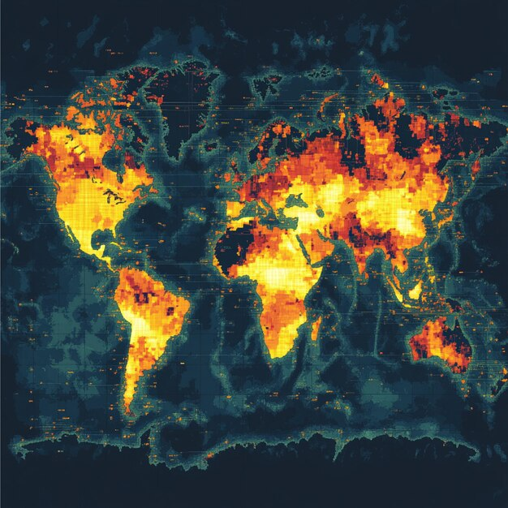
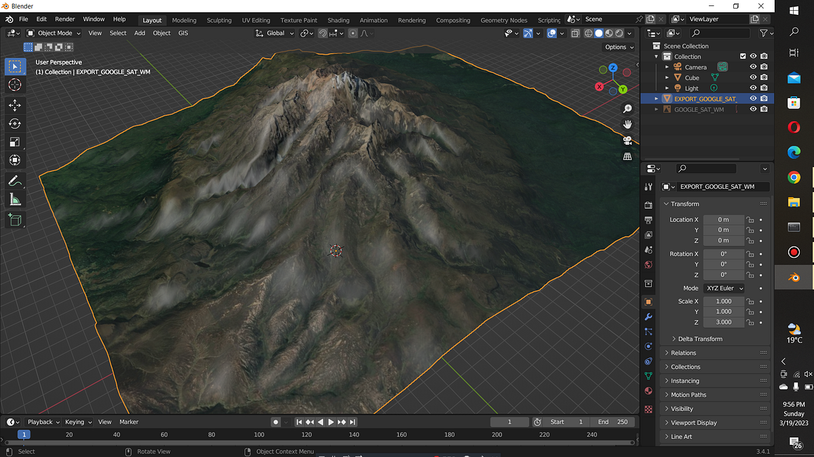
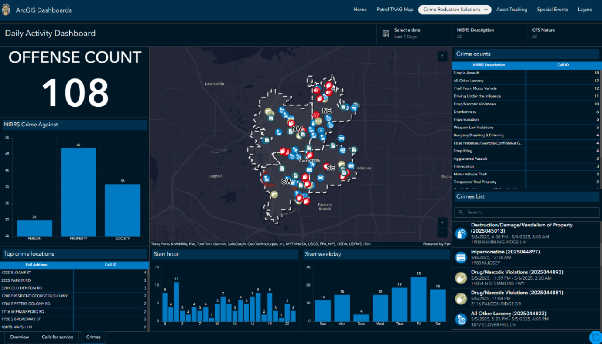
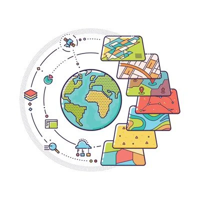
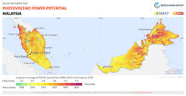
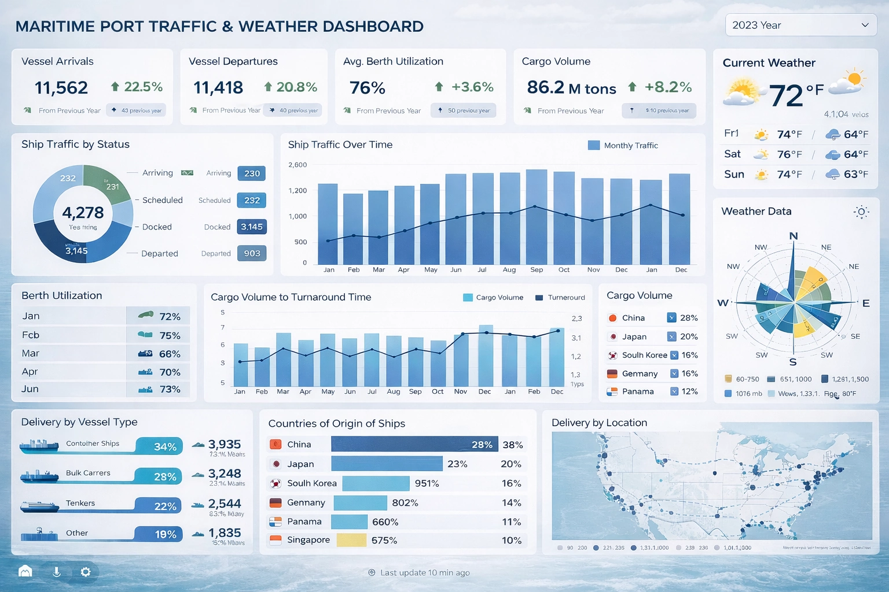

GIS
Fire Hotspot Analysis
QGIS-based spatial hotspot analysis using Kernel Density Estimation to identify high-risk fire zones from historical data.
QGISKDESpatial Analysis
Delivering end-to-end geospatial solutions — from data collection and spatial analysis to interactive dashboards and publication-ready maps. Every project is built to solve real problems with precision and clarity.




QGIS-based spatial hotspot analysis using Kernel Density Estimation to identify high-risk fire zones from historical data.

Interactive Streamlit dashboard with SQL backend showing trend graphs, heatmaps, and dynamic filtering by region.

PostgreSQL + PostGIS spatial database for storing, querying, and exporting geospatial datasets to QGIS layers.

Multi-layer GIS analysis overlaying environmental, infrastructure, and risk data for actionable zone classification.
I'm Luqman Latif, a final-year Geomatic Science student at UiTM with a deep focus on geographic information systems, spatial analysis, and data visualization. I build real GIS systems — not student exercises — turning raw geospatial data into actionable intelligence that decision-makers can actually use. My work sits at the intersection of spatial science and software engineering, combining QGIS/ArcGIS workflows with Python automation, SQL databases, and interactive dashboards.
A comprehensive view of all GIS and data projects — from spatial analysis to interactive dashboards and database systems.
QGIS-based spatial hotspot analysis using Kernel Density Estimation to identify high-risk fire zones from historical data.
Interactive Streamlit dashboard with SQL backend showing trend graphs, heatmaps, and dynamic filtering by region.
PostgreSQL + PostGIS spatial database for storing, querying, and exporting geospatial datasets to QGIS layers.
Multi-layer GIS analysis overlaying environmental, infrastructure, and risk data for actionable zone classification.

Streamlit dashboard correlating weather patterns with transport disruption data, featuring time-series analysis and route risk mapping.
Comprehensive proficiency across GIS platforms, programming, databases, and spatial analysis methodologies.


The complete software stack used across all projects — from desktop GIS platforms to cloud-based geospatial engines.